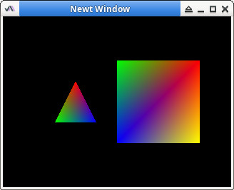

Steward
分享是一種喜悅、更是一種幸福
程式語言 - Java Binding for the OpenGL API (JOGL) - OpenGL 1.0 - Interpolate Color
參考資訊：
https://jogamp.org/
https://github.com/sgothel/jogl
https://jogamp.org/deployment/maven/org/jogamp/jogl/jogl-all/2.6.0/
Main.java
import com.jogamp.opengl.*;
import com.jogamp.newt.opengl.GLWindow;
import com.jogamp.opengl.util.Animator;
public class Main {
static final int w = 320;
static final int h = 240;
public static void main(String[] args) throws Exception {
GLWindow win = GLWindow.create(new GLCapabilities(GLProfile.get(GLProfile.GL2)));
win.setSize(w, h);
win.addGLEventListener(new GLEventListener() {
public void init(GLAutoDrawable d) {}
public void dispose(GLAutoDrawable d) {}
public void reshape(GLAutoDrawable d, int x, int y, int w, int h) {
GL2 gl = d.getGL().getGL2();
double nearPlane = 0.1;
double farPlane = 100.0;
double top = nearPlane * Math.tan(Math.toRadians(45.0 / 2));
double right = top * ((double) w / h);
gl.glViewport(0, 0, w, h);
gl.glMatrixMode(GL2.GL_PROJECTION);
gl.glLoadIdentity();
gl.glFrustum(-right, right, -top, top, nearPlane, farPlane);
gl.glMatrixMode(GL2.GL_MODELVIEW);
gl.glLoadIdentity();
}
public void display(GLAutoDrawable d) {
GL2 gl = d.getGL().getGL2();
gl.glLoadIdentity();
gl.glTranslatef(-1.0f, 0.0f, -5.0f);
gl.glBegin(gl.GL_TRIANGLES);
gl.glColor3f(1.0f, 0.0f, 0.0f);
gl.glVertex3f(0.0f, 0.5f, 0.0f);
gl.glColor3f(0.0f, 1.0f, 0.0f);
gl.glVertex3f(-0.5f, -0.5f, 0.0f);
gl.glColor3f(0.0f, 0.0f, 1.0f);
gl.glVertex3f(0.5f, -0.5f, 0.0f);
gl.glEnd();
gl.glLoadIdentity();
gl.glTranslatef(1.0f, 0.0f, -5.0f);
gl.glBegin(gl.GL_QUADS);
gl.glColor3f(1.0f, 0.0f, 0.0f);
gl.glVertex3f(1.0f, 1.0f, 0.0f);
gl.glColor3f(0.0f, 1.0f, 0.0f);
gl.glVertex3f(-1.0f, 1.0f, 0.0f);
gl.glColor3f(0.0f, 0.0f, 1.0f);
gl.glVertex3f(-1.0f, -1.0f, 0.0f);
gl.glColor3f(1.0f, 1.0f, 0.0f);
gl.glVertex3f(1.0f, -1.0f, 0.0f);
gl.glEnd();
}
});
Animator a = new Animator(w);
win.setVisible(true);
a.start();
Thread.sleep(3000);
a.stop();
win.destroy();
}
}
編譯、執行
$ export JAR="$HOME/jogamp-all-platforms/jar" $ export CP="$JAR/jogl-all.jar:$JAR/gluegen-rt.jar" $ export CP="$CP:$JAR/jogl-all-natives-linux-amd64.jar" $ export CP="$CP:$JAR/gluegen-rt-natives-linux-amd64.jar" $ javac -cp "$CP" Main.java $ java --enable-native-access=ALL-UNNAMED -cp ".:$CP" Main
